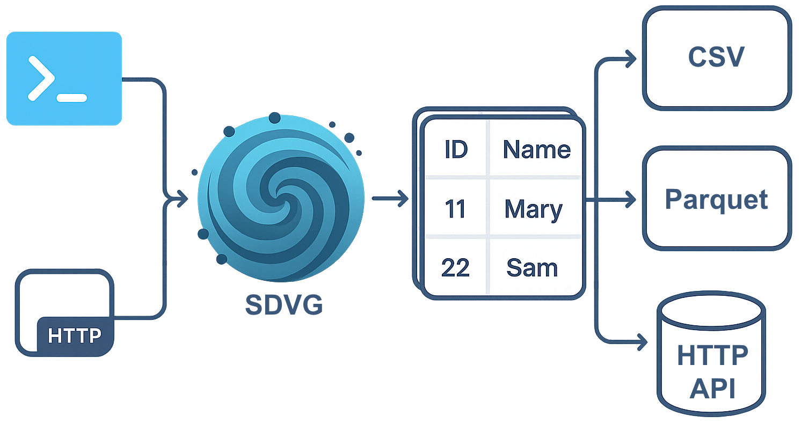

Home¶


Description¶
SDVG (Synthetic Data Values Generator) is a tool for generating synthetic data. It supports various run modes, data types for generation, and output formats.

Run modes:
- CLI - generate data, create configs, and validate them via the console;
- HTTP server - accepts generation requests through an HTTP API.
Data types:
- strings (english, russian);
- integers and floating-point numbers;
- dates with timestamps;
- UUID.
String subtypes:
- random strings;
- texts;
- first names;
- last names;
- phone numbers;
- patterns.
Each data type can be generated with the following options:
- specify percentage/number of unique values per column;
- ordered generation (sequence);
- foreign key reference;
- idempotent generation using a seed number;
- value generation from ranges with percentage-based distribution.
Output formats:
- devnull;
- CSV files;
- Parquet files;
- HTTP API;
- Tarantool Column Store HTTP API.
Installation¶
Standard installation¶
You can install SDVG by downloading the appropriate binary version from the GitHub Releases page.
Download binary for your OS:
# Linux (x86-64)
curl -Lo sdvg https://github.com/tarantool/sdvg/releases/latest/download/sdvg-linux-amd64
# Linux (ARM64)
curl -Lo sdvg https://github.com/tarantool/sdvg/releases/latest/download/sdvg-linux-arm64
# macOS (x86-64)
curl -Lo sdvg https://github.com/tarantool/sdvg/releases/latest/download/sdvg-darwin-amd64
# macOS (ARM64)
curl -Lo sdvg https://github.com/tarantool/sdvg/releases/latest/download/sdvg-darwin-arm64
Install binary in your system:
Check that everything works correctly:
Compile and install from sources¶
To compile and install this tool, you can use go install command:
# To get the specified version
go install github.com/tarantool/sdvg@0.0.2
# To get a version from the master branch
go clean -modcache
go install github.com/tarantool/sdvg@latest
Check that everything works correctly:
Quick Start¶
Here's an example of a data model that generates 10,000 user rows and writes them to a CSV file:
output:
type: csv
models:
user:
rows_count: 10000
columns:
- name: id
type: uuid
- name: name
type: string
type_params:
logical_type: first_name
Save this as simple_model.yml, then run:
This will create a CSV file with fake user data like id and name:
id,name
c8a53cfd-1089-4154-9627-560fbbea2fef,Sutherlan
b5c024f8-3f6f-43d3-b021-0bb2305cc680,Hilton
5adf8218-7b53-41bb-873d-c5768ca6afa2,Craggy
...
To launch the generator in interactive mode:
To view available commands and arguments:
More information can be found in the user guide.